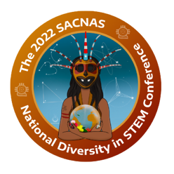
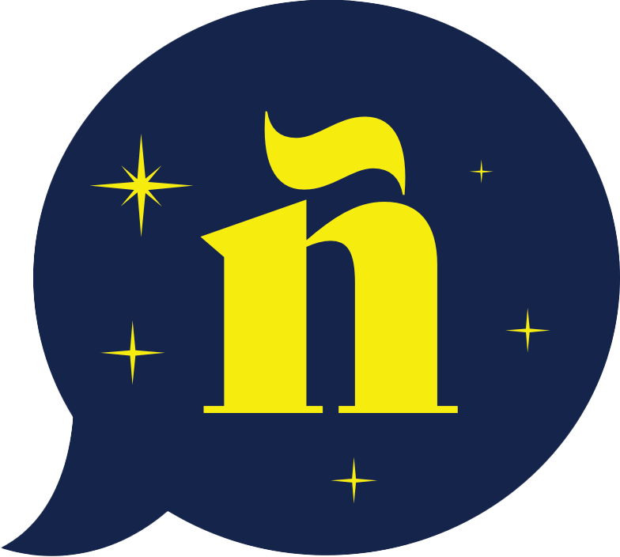

Teaching, Mentoring, & Outreach
Fostering the next generation of astronomers and bringing the universe to all

Workshops
I regularly attend and present at workshops and conferences to share my research and connect with collaborators.

What drives the Growth of black holes? — In September 2023 I attended and presented at a workshop in Reykjavik. The workshop focused on the advancements in AGN research in the past decade, and where future progress will be made. Learn More

SACNAS NDiSTEM 2022 — In October 2022 I attended and spoke at SACNAS NDiSTEM, the largest STEM diversity event in the country, along with a group of Astrocharlas undergraduates.
Mentoring
I am dedicated to building a supportive and inclusive academic environment through direct mentoring of students.

Astrocharlas — In order to affect systematic change in astronomy, I was the primary organizer for Astrocharlas, a program which provides Spanish-speaking undergraduates with experience and a professional network. Once a semester we host a Spanish-language talk on astronomy topics with speakers from around the world. Astrocharlas is the first dedicated Spanish-language talk series at the College of Science at UArizona. Please find out more about this program at the HSI Astrocharlas page.
By partnering with Spanish-speaking undergraduates we foster academic and cultural relationships among Spanish-speaking and Latinx astronomers. We provide opportunities including meeting academics from around the world and conference travel to ensure the success of Astrocharlas students in whatever discipline they hope to pursue.
CoS Service Award — I was awarded the 2022 College of Science Service Award for the Department of Astronomy for my outreach and DEI contributions to the department.
Outreach & DEI
As much as I love learning, it is important to me to pass on my passion and knowledge in astronomy. Public outreach in the sciences is incredibly important to draw attention to the important work that goes on all over the world in frontier astronomical research, and to encourage the new generation of astronomers to begin learning the subject at any age. I have strived to work across environments, on top of mountains and in cities, across age groups, from schoolchildren to senior citizens, and even internationally in order to bring astronomy to all members of the public.
Astronomy has never been an equal playing field, and the field continues to suffer from a lack of diverse backgrounds, cultures, and opinions. Without direct and concerted efforts, these structural barriers cannot be torn down. I continue to work within my academic departments and systems to achieve equity for the future generations of astronomers.
Recent Outreach
SkyNights — I presented as a part of the Mt. Lemmon SkyCenter's SkyNights program on JWST. The program was followed by night sky observing with the telescope on the mountain. Learn More

Sabino Canyon Star Party — I ran a telescope at a Star Party near a popular nature spot in Tucson. In addition to observing of the moon and planets, we also had a booth with an infrared camera to talk JWST. Learn More

Splendido Astronomy Lecture — I presented on JWST at the Splendido Retirement Community as a part of their Splendido Intellectual Pursuits Program. Learn More

Space Drafts — I presented on my work with JWST at Tucson's Space Drafts, alongside Charity Woodrum and Marcia Rieke, connecting the construction of the telescope to the amazing science it enables. Learn More
DEI Initiatives

SODEI — I worked as a part of the Steward Observatory Diversity, Equity and Inclusion Initiative's Department Climate Task Force.
Resources
If you would like me to give a public talk at your school or organization, please feel free to contact me with the form below.